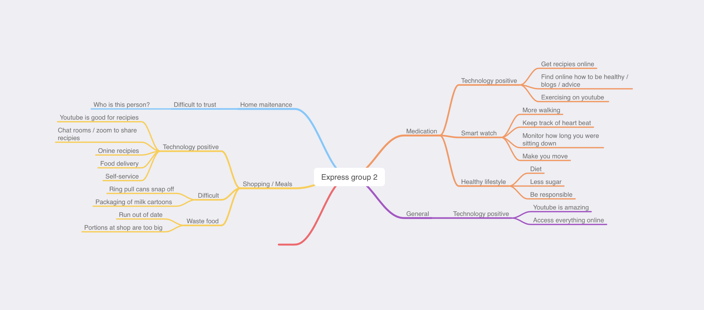

I got accepted for Web Design and Development!!!
January 2020
First trimester :
September 2020 (Remote studying)
Being Digital
- On this module we learned basic of web design and by the end of the year we created one website, inspired by local business.
Information systems in organisations
- In this module we explore IT systems in their business and organisational context, general systems theory, entrepreneurialism, and an introduction to professional issues in computing
Foundations of Software Design and Development
- In this module you will learn to design and write computer programs in Java, with an emphasis on object-oriented programming using Eclipse as an Integrated Development Environment.
Second trimester :
January 2021 (Remote studying)
Introduction to Human Computer Interaction
- This module focues on human interaction with computer and allowed me to explore UX in more depth.
Programming Fundamentals
-
- On this module we were exploring C and C++ programming languages.
Programming for Interactive Media and Design
- We learned processing, and created a game by the end of the module.
Decisions Decisions...
At this point I knew back-end programming is not for me and I don't enjoy studying it, I moved to User Experience Design (UX)degree.
Summer Break
I took part in research project with Linda Shore, me and couple of UXD students conducted interviews with older adults and then me and my classmate created codes of data.
This experience made me more confident and reasurred my decision about moving to UX degree.
